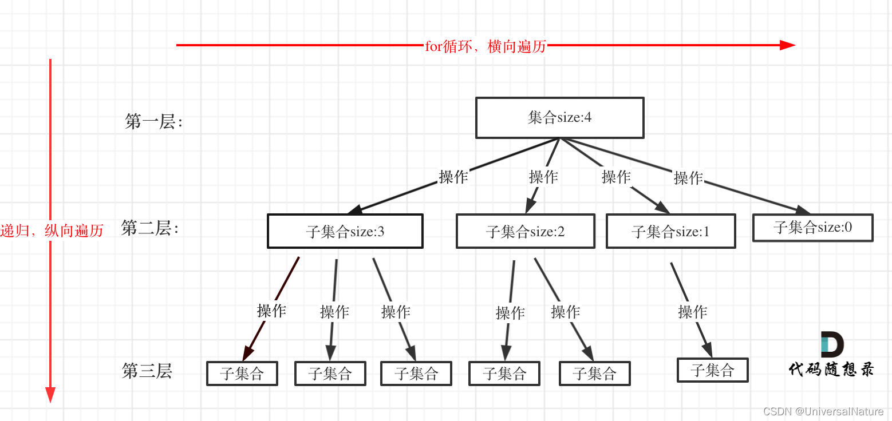
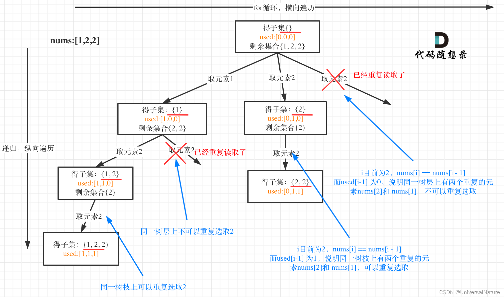

BackTracking
回溯是暴力搜索算法，并不高效，可以解决
- 组合问题：N个数里面按一定规则找出k个数的集合
- 排列问题：N个数按一定规则全排列，有几种排列方式
- 切割问题：一个字符串按一定规则有几种切割方式
- 子集问题：一个N个数的集合里有多少符合条件的子集
- 棋盘问题：N皇后，解数独等等
回溯形成的是一个树形结构，for循环横向遍历，递归纵向遍历
剪枝精髓：for循环在寻找起点的时候要有一个范围，如果这个起点到集合终止之间的元素已经不可能达到题目要求的规则了，就没有必要搜索了。对于求和这个规则来说，经常需要进行排序后for中判断进行剪枝
来自回溯法模板
1 | |

如果需要去重，可以参考90.子集II，40.组合总和II，47.全排列 II，它们都是 有重复元素但不能有重复组合 。 used 数组表示的是同一树枝上是否重复使用，used[i]==1 表示同一树枝上已使用；used[i]==0 表示同一树枝上没使用，同时还可以表示同一树层上已使用，如果此时给定数组出现 nums[i-1]==nums[i] 就需要 continue，因为同一树层不能重复选，在

如果不能排序去重，参考491.递增子序列 使用 unordered_set，处理节点前，先 if uset.find(nums[i]) != uset.end()，处理节点之后标记使用 uset.insert(nums[i])。 以后树枝去重统一用used，树层去重统一用set